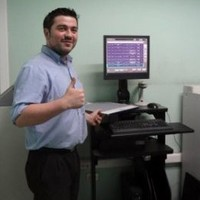

Resumen
Desarrollador de aplicaciones (Dicom Viewer y CAD) e integraciones HL7 y FHIR.
Administrador de sistemas RIS-PACS e implementación de sistemas médicos de alta complejidad. Funciones de Administración y soporte de Sistemas RIS PACS y capacitaciones a usuarios.
Implementación de soluciones de interoperabilidad HL7 en Plataforma Mirth Connect y sistemas RIS PACS GE HealtCare.
Datos Personales
Formación